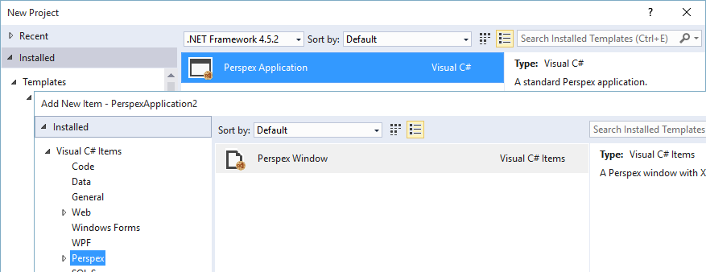
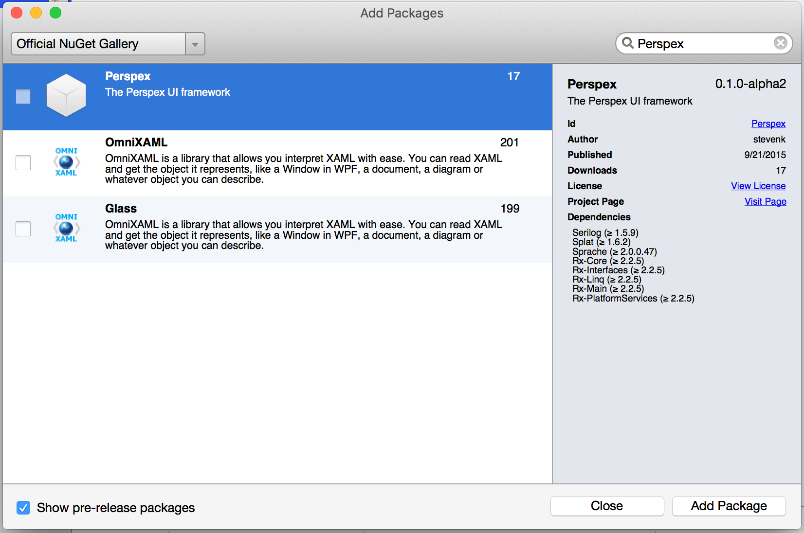

Getting Started
Windows

The easiest way to try out Perspex is to install the Visual Studio Extension.
This will add a Perspex project template and a Window template to the standard Visual Studo “Add” dialog (yes, icons still to come :) ):
OSX / Linux
It is a little more manual on non-Windows platforms, but using Xamarin Studio you can install the Perspex NuGet package.
